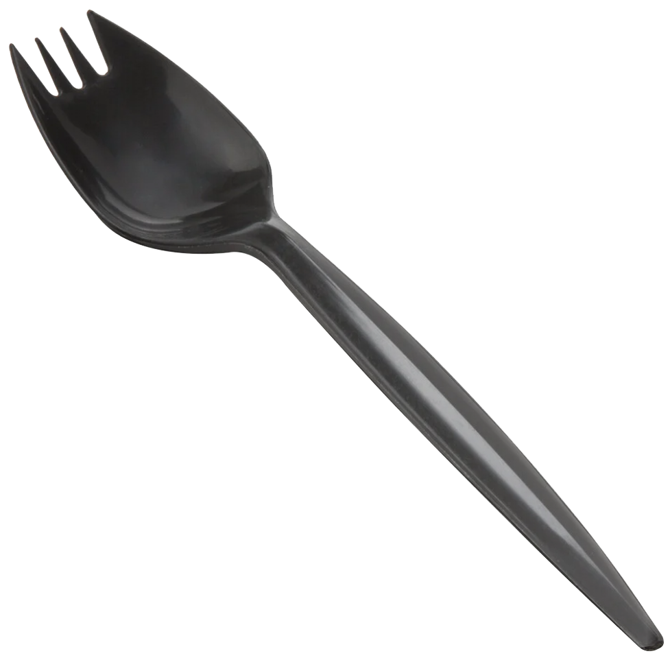

The Spork: Revolutionizing Mealtime, One Hybrid at a Time
Introducing the Spork—because why choose between a spoon and a fork when you can have both in one absurd utensil? Gone are the days of carrying multiple utensils. The spork is here to do it all—stab your salad *and* scoop your soup!
Perfect for eating anything that requires a spoon or a fork, the spork brings convenience and confusion to your meals. Whether you're at home, at the office, or in a survival situation, the spork is your trusty multitasker.
Is it practical? Absolutely not. But is it a conversation starter? You bet it is. Who wouldn't want to debate the complexities of eating with a spork at a dinner party?
Key Features:
Buy it today for all your future meal-ruining adventures—because why not?